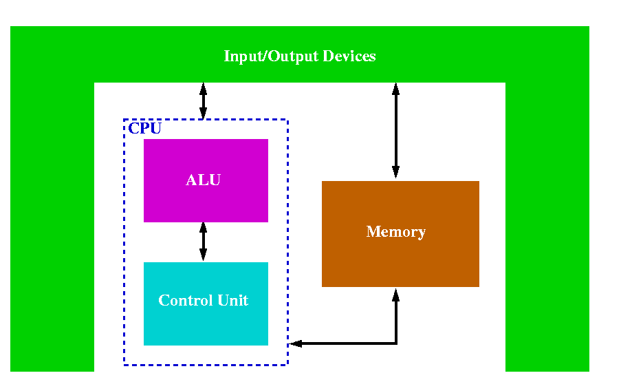

How Computers Work

Outline
Review of Basic Computer Hardware
- Computer hardware is the set of physical components that make
up a computational device.
- Some examples of hardware include:
- The output devices, such as a printer or monitor, that
provides feedback for the user;
- The input devices, such as a mouse or keyboard, that are the
means by which a user interacts with the computer;
- The motherboard, the electronic circuit board(s) that
contains many of the major components of the computer,
not the least of which is the Central Processing Unit.
von
Neumann architecture
- A computer follows the von Neumann architecture (also known
as the stored program architecture) and has three basic parts:
- the central processing unit (CPU)
- computer memory,
- input and output devices (peripherals)

The Central Processing Unit
- The Central Processing Unit (CPU) functions as the "brain" of the
computer.
- It directs execution of instructions received from
software, and manages the low-level internal workings of the
computer.
- It is composed of three parts:
- The Program Control Unit (PCU) acts as the "conductor"
of the computer
- It retrieves program instructions from main
memory and determines the type of instruction
- It also
coordinates the transfer of data within the CPU and
throughout the computer.
- Once decoded, most instructions are carried out by
Arithmetic Logic Unit (ALU).
- The Arithmetic Logic Unit functions as the "orchestra."
- It
performs simple math operations on the inputs it is given,
and produces a result.
- These operations can be addition or
logic, such as AND and OR comparisons.
- Additionally, the CPU contains special memory cells called
registers that store the data the CPU is currently manipulating
- they function as a scratch space
Back to Contents
Clock Cycles
- A clock cycle
- a measure of the time required to transfer items
between the components of the CPU.
- CPU clock speed now measured in Megahertz (Mhz) or Gigahertz (GHz),
which means millions or billions of cycles per second, respectively.
- Intel has a 3.2 GHz Pentium IV
processor and AMD (Advanced Micro
Design) also has processors over 2 GHz.
- The PowerPC G4 processors on the lab machines run at 800 Mhz.
- Since data is transferred as electronic signals, the speed
of transfers on the chip is limited by the speed at which an electron
can move.
- The distance between the components becomes a factor
in clock speed --- the shorter the distance, the faster the
execution.
- This is one reason why people strive to make chips as
small as possible.
- Another reason is that you can manufacture more chips
from the same amount of material
- Distance is also a factor in main memory access time vs.
cache access time
- Recall that cache is very fast memory that is physically close to the CPU and holds a copy of portions of main memory
- when a memory access would normally occur, cache is first examined to determine if it has a copy of that piece of data
- If you think of the the distance from the CPU to
cache located on the same chip as the distance from
Carlisle to Baltimore
- then the distance to memory off chip is
about the distance from Carlisle to the Sun
Back to Contents
CPU Word Size
- Word size
- the number of bits that can be stored by a register in the CPU
- on some machines, it is also a measure of the amount of data that can
be moved to the CPU in a single transfer.
- generally includes both the data
coming from main memory and from I/O devices.
- The Intel Pentium IV has a word size of 32 bits.
- We often say it has a "32-bit architecture".
- The PowerPC G4 processor on the lab machines is also a 32 bit processor.
- Other processors in higher-end machines have already moved
to 64 bits
- Intel's 64-bit Itanium chip is an example of such a
processor and is used on machines that run as servers.
- The PowerPC G5 seen on Apple's new G5 machines also has a word size of 64 bits.
Back to Contents
More on Registers
- The CPU contains small, high-speed memory cells used to store temporary
results produced by the ALU as well as certain control information.
- As we have already seen, this memory is called registers.
- The early IBM PCs had only 16 registers; the first Pentium chips
moved to 32.
- Some registers on a CPU always store a particular type of value.
- An example of such a dedicated register is the Program
Counter (PC) register
- contains the memory address of the next
instruction to be executed.
- sometimes called the IP (Instruction Pointer)
- Another is the Instruction Register (IR)
- holds a copy
of the next machine instruction to be executed
Back to Contents
Buses
- A bus is a pathway for sending electrical signals between components.
- it is used for communication between the CPU and
other devices, as well as among the devices themselves.
- Between memory and the CPU are three main buses
- The data bus
- transfers a word of data at a time between memory and the CPU
- The address bus
- transfers the address that indicates which location in
memory we wish to access
- Suppose a computer needs to access 4 billion
pieces of information with distinct memory addresses
- it
would need to use a 32 bit (4 byte) address to distinguish each
location
- Why?
Because each each bit is binary and 232 is about 4 billion (4 GB).
- For a processor with a 16-bit wide bus, two transfers would be
needed to assemble the address for each piece of memory, slowing
things down considerably.
- The control bus
- transfers control signals indicating whether we are
reading to or writing from memory
- These three buses are often grouped together and called the
system bus or external bus (because it handles communication with
devices external to the CPU)
- The system bus may also be connected to other peripherals,
such as various disk drives
- The internal CPU bus and the system bus often operate at
different speeds, with the CPU bus being much faster.
Back to Contents
Fetch-decode-execute Cycle
- Instructions execute within a CPU in a fetch-decode-execute cycle.
- This is common across all computers (at least at a slightly abstract level). The cycle proceeds as follows:
- Fetch the next instruction from memory into the Instruction
Register (IR).
- Change the Program Counter (PC) to contain the memory
address of the following instruction.
- Determine the type of instruction.
- If the instruction uses data in memory, determine the addresses
of the data items.
- If needed, fetch the data from the specified memory addresses
into the CPU registers.
- Execute the instruction.
- Store the results into the proper place, whether a register, disk,
or main memory.
- Return to step 1 and repeat as needed.
- Note that a single fetch-decode-execute cycle can take several clock
cycles
- though modern processors can reach sustained speeds of one
instruction per clock cycle (sometimes more!)
- a fetch-decode-execute cycle is sometimes called a CPU cycle
Back to Contents
Memory Revisited
- When I discussed main memory, I also called it RAM, which stands
for Random Access Memory
- in random access memory, the time needed to access data is
independent of its location
- This is in contrast to sequential access memory (SAM)
- in which the
time to access a memory location increases with the distance between
the current and desired memory location
- Consider a cassette tape
- to get to a song you need to move
through the tape until you reach the song you are looking for
- In a CD, you can simply jump to the song's location
- random access
- of course, once you are there you must listen to the
song in sequential order, which is why a CD is sometimes called
a Direct Access Sequential Disk (DASD)
- A cassette tape is also an example of another way to characterize
memory :
- since you can store data over the data that is already there, it is
called Read/Write (R/W) memory
- obviously, a computer's main memory is R/W
- A music CD, meanwhile, cannot be overwritten with new data
- it is an example of a Read-Only Memory (ROM) device
- every computer also has a part of memory that is read only; in
fact, this part is called ROM
- technically speaking ROM is
random access memory, but the acronym RAM is generally used to mean the
area of memory on a machine that is R/W memory
- we already talked about how ROM is utilized when we "boot
up" a personal computer
Back to Contents